2022 paintings after February
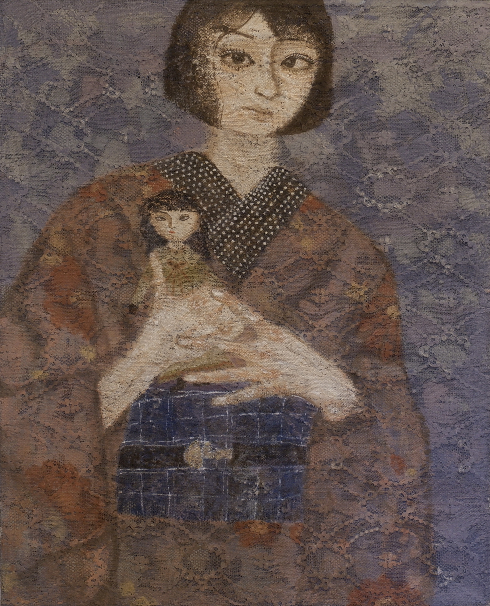
青い春 (blue spring), Oil on burlap and lace,
21 × 26 in, AY24
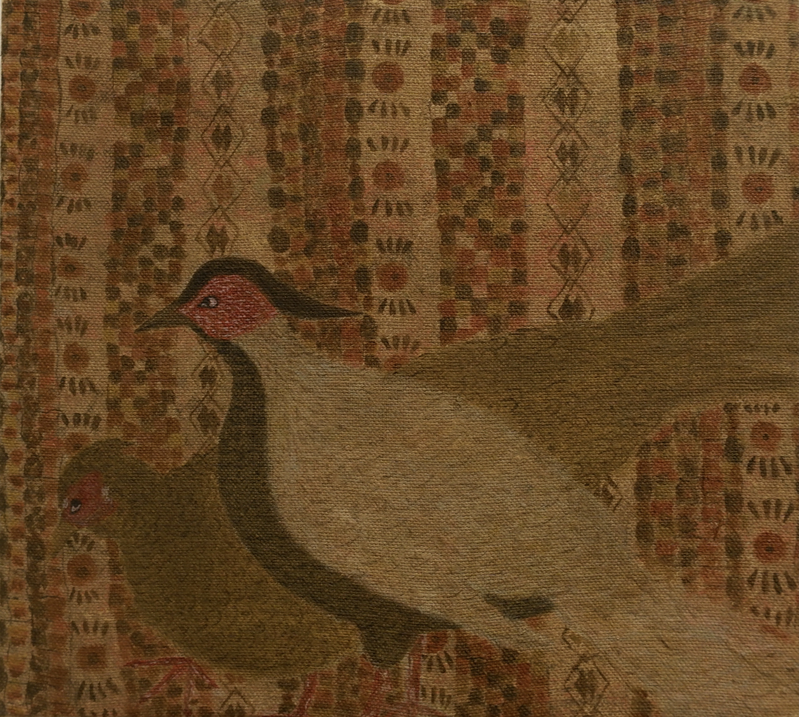
Birds, Oil on linen,
9 x 10 in, AY23

会議(conference),
6.5 x 8.5 in, AY22

ボール遊び(summer vacation),
7.5 x 9.6 in, AY21
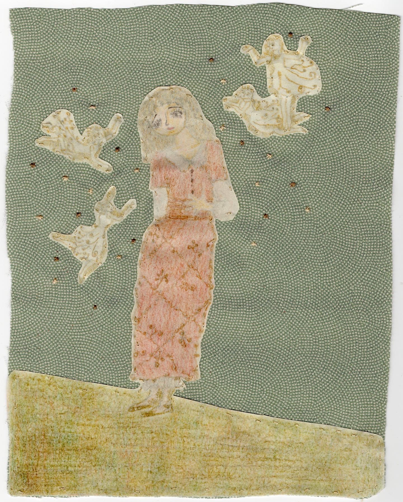
腹痛（stomachache）,
6.5 x 8.5 in, AY20
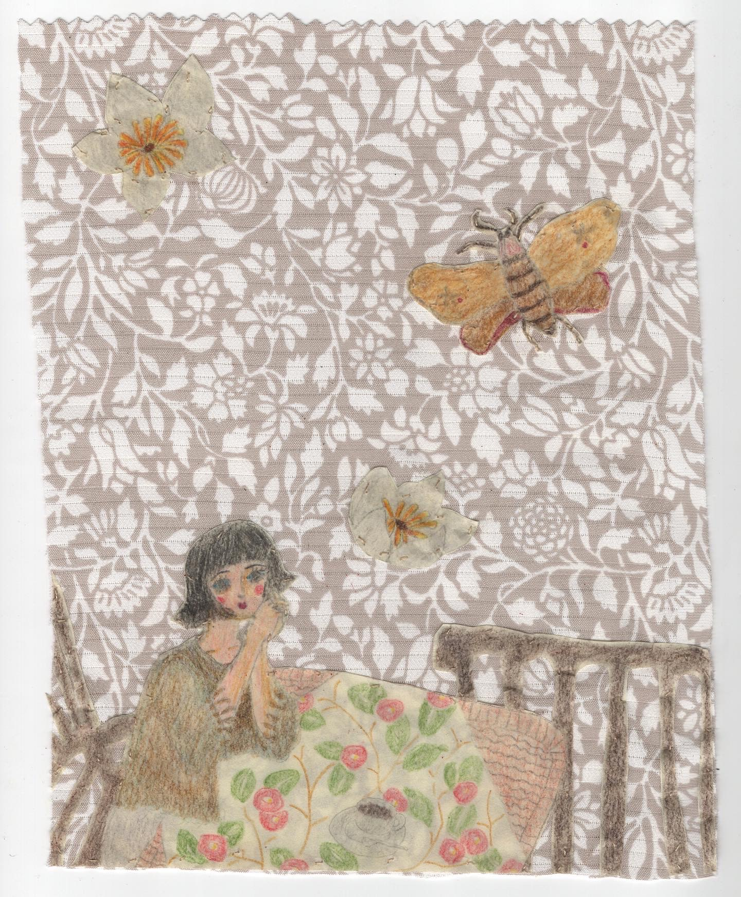
喫茶店で夢二を待つ(waiting Yumeji at coffee shop), 7 x 9 in, AY19

傘を持つ女たち(Ladies with parasol)
,
7.4 x 9.5 in, AY18
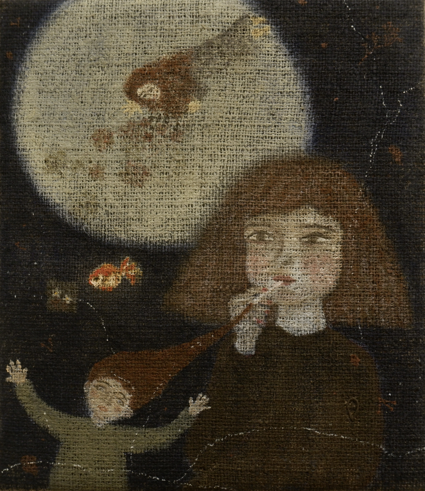
夜の満月に絵を描く人, Oil on burlap, 12 x 14 in, AY17

July, Goauche on washi, slightly bigger than A4 size paper, AY16

I forgive you, Oil on linen,
12 x 15 in, AY15

秋の唄と昔のスカート、そして海 (autumn sound and an old skirt, the ocean),
8 x 10 in, AY14
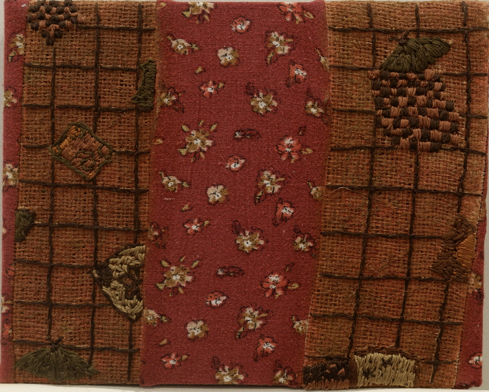
青春ノイローゼ,
8 x 10 in, AY13


Premonition, Oil on linen, 18 x 20 in


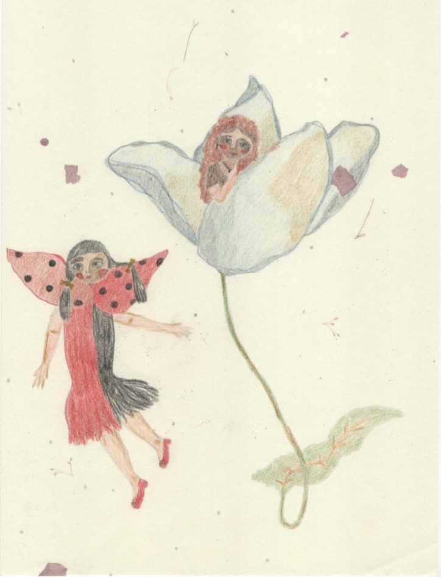
Spring, Colored pencil on washi, A4 size, AY11

Preparation, Oil on burlap, AY10

Oil on linen, AY09
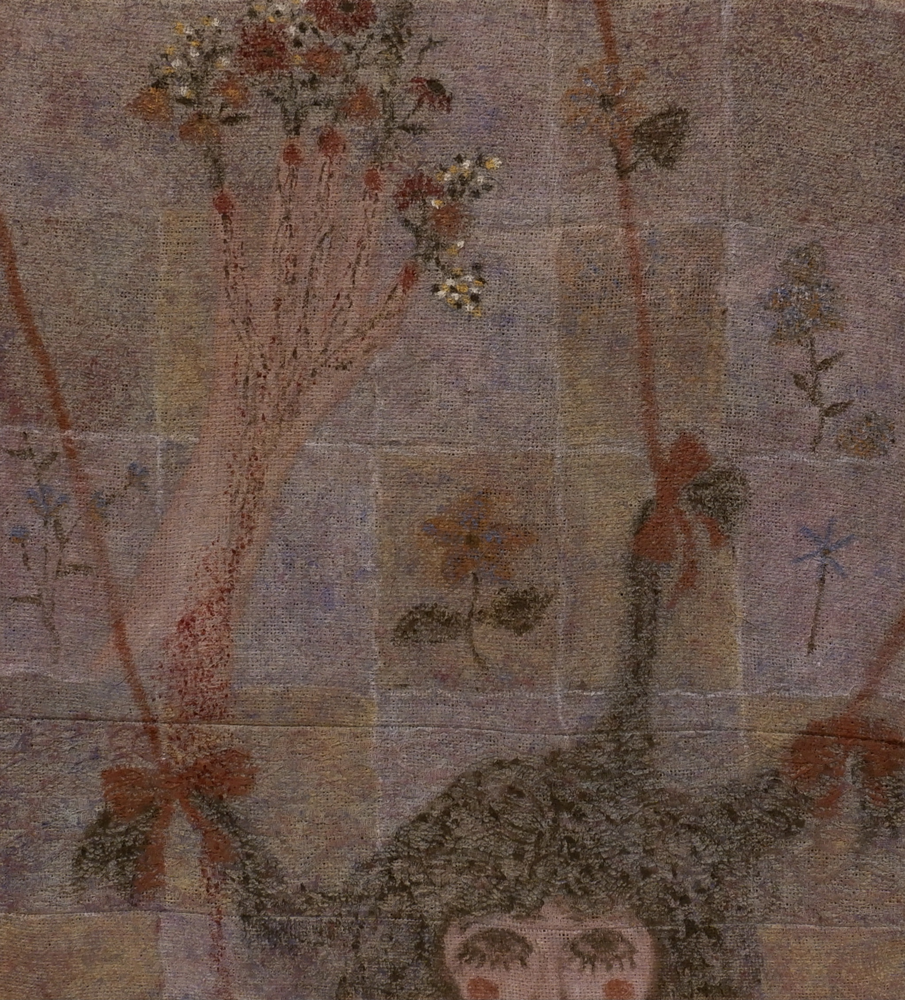
Oil on burlap, 20 x 22 in, AY08
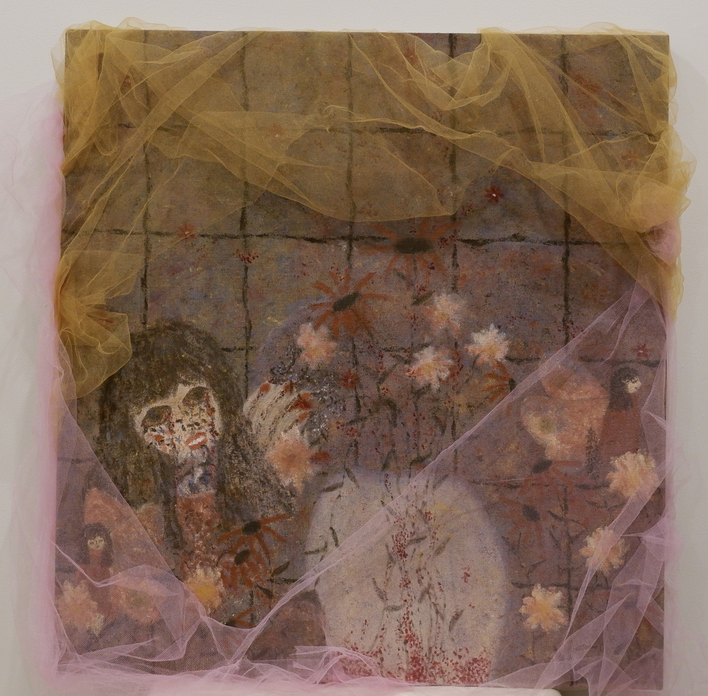
Oil on linen, 26 x 28 in, AY07


Oil on burlap, 20 x 22 in, AY06

Sharing secrets with fairy,
Oil on burlap,
20 x 22 in, AY05

oil on linen, 28 x 30 in, AY04
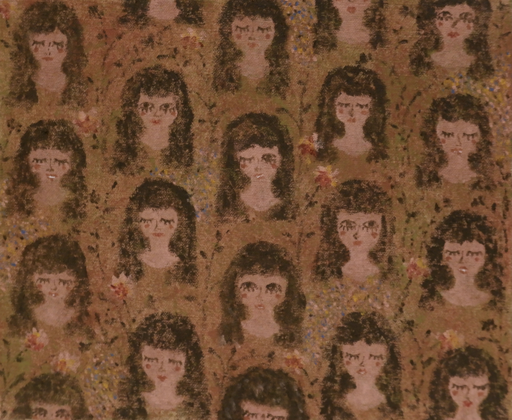
私たちピンサロ嬢になりました(we become a pink salon lady), oil on linen, 12 x 10 in, AY03

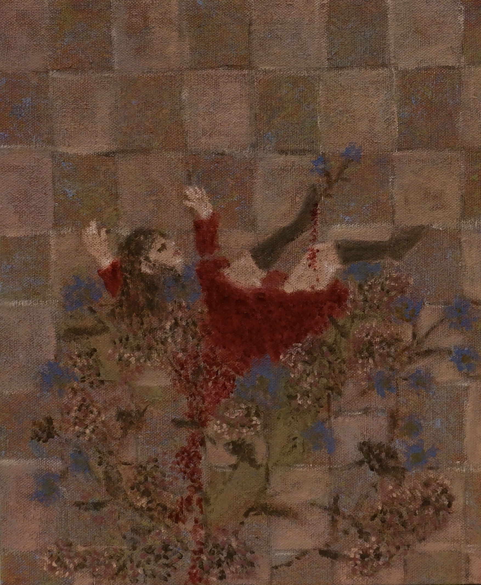
Before I disappear, Oil on linen, 12 x 10 in, AY02

Oil on linen, 27 x 30 in, AY01